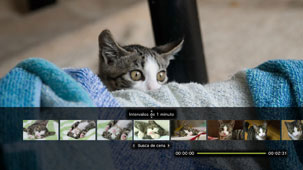
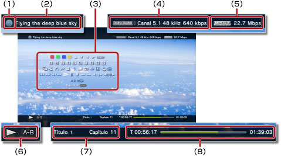

Vídeo > Utilizando o painel de controle
Utilizando o painel de controle
Realize várias operações utilizando o painel de controle na tela. O painel de controle pode ser exibido ou ocultado pressionando o botão  .
.
Os ícones exibidos nesta página são definidos como:
 |
Vídeo gravado em um Blu-ray Disc (BD) somente para leitura |
|---|---|
 |
Vídeo gravado em um BD regravável |
 |
Vídeo gravado no formato AVCHD |
 |
|
 |
Vídeo gravado no Modo VR em um DVD-R / DVD-RW |
 |
Arquivos de vídeo salvos no armazenamento do sistema |
 |
Arquivos de vídeo salvos em uma mídia de armazenamento* |
| * |
Um adaptador USB adequado (não incluído) é necessário para utilizar a mídia de armazenamento com alguns modelos. |
|---|
Atenção
Algum conteúdo pode possuir condições de reprodução predefinidas pelo seu desenvolvedor. Nestes casos, alguns itens do painel de controle podem não estar disponíveis.
Ícones Vermelho / verde / azul / amarelo


Realiza as operações correspondentes ao ícone. Os recursos atribuídos ao ícone variam dependendo do conteúdo.
Para cima / Para baixo / Esquerdo / Direito

Seleciona um item.
Confirmar
Confirma o item selecionado.
Teclado numérico

Insere números.
Menu pop-up
Exibe o menu pop-up.
Menu
Exibe o menu.
Menu superior
Exibe o menu superior.
Voltar
Retorna a um ponto específico do vídeo.
Busca de cena


Utilize este recurso para ver as miniaturas que são criadas em certos intervalos de tempo. Selecione uma miniatura para reproduzir o vídeo a partir desta cena.

1. |
Utilize o botão |
|---|
 ou
ou  para selecionar o intervalo de tempo utilizado para criar as miniaturas.
para selecionar o intervalo de tempo utilizado para criar as miniaturas.2. |
Utilize o botão |
|---|
 ou
ou  para selecionar a miniatura da cena que deseja assistir.
para selecionar a miniatura da cena que deseja assistir.Dicas
- A opção [Capítulo] pode ser selecionada somente com o conteúdo de vídeo que inclui as informações de capítulo.
- O recurso de busca de cena não pode ser utilizado com um conteúdo de vídeo de duração menor que um minuto.
- O recurso de busca de cena não pode ser utilizado para outros tipos de conteúdo de vídeo.
- Ao selecionar uma miniatura, uma prévia da cena é reproduzida por cerca de 15 segundos.
Ir para


Reproduz a partir de um capítulo ou tempo especificado.
| Título X | Especifica o número do título. |
|---|---|
| Capítulo X | Especifica o número do capítulo. |
| XX:XX / XX:XX:XX | Especifica o tempo. |
Dica
Dependendo do arquivo de vídeo, você pode não ser capaz de utilizar (Ir para).
Opções de ângulo
Selecione um dos ângulos de exibição disponíveis para o conteúdo gravado com diversos ângulos.
Opções de áudio
Selecione uma das opções de áudio disponíveis para o conteúdo gravado com diversas faixas de áudio.
Opções de legendas
Selecione uma das opções de legenda disponíveis para o conteúdo gravado com diversos idiomas de legenda. As legendas ocultas podem ser selecionadas quando o conteúdo é compatível com legendas ocultas.
Dicas
- Para exibir legendas ocultas, você deve ir até
 (Configurações) >
(Configurações) >  (Configurações de vídeo) > [Legendas ocultas] e definir como [Ativado].
(Configurações de vídeo) > [Legendas ocultas] e definir como [Ativado]. - A opção de legendas ocultas está disponível somente nos sistemas PS3™ vendidos na América do Norte.
Opções de estilo de legendas
Selecione uma das opções de exibição disponíveis para o conteúdo gravado com diversos estilos de legenda.
Controle de volume
Ajuste o nível de saída do volume do conteúdo sendo reproduzido em  (Vídeo). Selecione um dos nove níveis.
(Vídeo). Selecione um dos nove níveis.
Dicas
- O som poderá ficar distorcido se o nível de saída do volume estiver alto demais. Se isto acontecer, abaixe o nível de saída do volume.
- Esta configuração pode ser desabilitada ao utilizar alguns dispositivos de áudio ou ao reproduzir alguns tipos de áudio.
Configurações AV
Ajuste as configurações relacionadas à saída do conteúdo reproduzido em (Vídeo). Os itens exibidos variam dependendo do conteúdo.
| Redução de ruído do quadro | Selecione para reduzir o ruído fino. |
|---|---|
| Redução de ruído de bloco | Selecione para reduzir o ruído de blocos tipo mosaico exibido na tela. |
| Redução de ruído de mosquito | Selecione para reduzir o ruído de mosquito que aparece nas bordas das imagens visuais. |
| Upscaler | Selecione para uma saída com qualidade aprimorada. O valor selecionado é refletido em [BD/DVD - Upscaler] em (Configurações) > (Configurações de vídeo). |
| Formato de saída de vídeo | Selecione o formato da saída de vídeo. Selecione o formato de saída de vídeo para a reprodução de DVDs ou BDs. O valor selecionado é refletido em [BD/DVD - Formato de saída de vídeo (HDMI)] em (Configurações) > (Configurações de vídeo). |
| Y Pb/Cb Pr/Cr Super-branco | Selecione para a exibição superbranca. O sinal superbranco agora pode ser produzido na reprodução de um DVD, BD ou disco AVCHD. O valor selecionado é refletido em [Y Pb/Cb Pr/Cr Super-branco (HDMI)] em (Configurações) >  (Configurações de exibição). (Configurações de exibição). |
| RGB gama completa | Selecione para a exibição em RGB gama completa. O valor selecionado é refletido em [RGB gama completa] em (Configurações) > (Configurações de exibição). |
| Controle de amplitude dinâmica | Selecione o controle de amplitude dinâmica. Habilite ou desabilite o recurso de controle de amplitude dinâmica do sistema PS3™ na reprodução de BDs e DVDs que produzam som Dolby Digital. O valor selecionado é refletido em [BD/DVD - Controle de amplitude dinâmica] em (Configurações) > (Configurações de vídeo). |
| Formato de saída de áudio | Selecione o formato de saída de áudio. Selecione o formato de saída de áudio para a reprodução de DVDs ou BDs. O valor selecionado é refletido em [BD/DVD - Formato de saída de áudio (HDMI)] ou [BD - Formato de saída de áudio (digital óptico)] em (Configurações) > (Configurações de vídeo). |
Opções de data/hora
Selecione para exibir o tempo transcorrido ou o tempo restante de um título ou um capítulo. Os itens exibidos variam dependendo do conteúdo sendo reproduzido.
Modo de tela
Altere o modo de tela.
| Normal | Selecione para que a exibição do vídeo se ajuste ao tamanho da tela sem alterar as proporções. |
|---|---|
| Zoom | Selecione para exibir o vídeo em tela cheia sem alterar suas proporções. Partes do vídeo nas áreas superior e inferior ou esquerda e direita são cortadas. |
| Tela cheia | Selecione para exibir o conteúdo em toda a tela alterando as proporções e esticando a imagem vertical e horizontalmente. |
| Original | Selecione para exibir o vídeo em seu tamanho original. |
Dica
Dependendo do arquivo de vídeo, pode não ser possível alterar o modo de tela.
Alterar Ícone
Altera o ícone (imagem miniatura) associado ao arquivo de vídeo. Durante a reprodução do arquivo de vídeo, selecione (Alterar ícone) quando a imagem que você deseja utilizar como ícone estiver sendo exibida.
Dicas
- Dependendo do arquivo de vídeo, pode não ser possível alterar o ícone.
- Um arquivo de vídeo menor que dois segundos não pode ser utilizado como ícone.
Excluir
Exclui um arquivo de vídeo que está sendo reproduzido.
Mostrar
Exibe o status da reprodução e outras informações relacionadas. A informação exibida varia dependendo do conteúdo sendo reproduzido.

(1) |
Mídia |
|---|---|
(2) |
Título |
(3) |
Painel de controle |
(4) |
Codec de som / número do canal / taxa de amostragem / taxa de bits |
(5) |
Codec de vídeo / taxa de bits |
(6) |
Ícone de status |
(7) |
Título / capítulo |
(8) |
Tempo transcorrido / tempo total |
Anterior (Voltar ao início) / Próximo
Retorna para o capítulo anterior ou avança para o próximo capítulo.
Dica
Ao reproduzir arquivos de vídeo salvos na mídia de armazenamento ou no armazenamento do sistema,  (Próximo) não estará disponível. Além disso, selecionar
(Próximo) não estará disponível. Além disso, selecionar  (Anterior) fará com que a reprodução inicie no começo do arquivo de vídeo.
(Anterior) fará com que a reprodução inicie no começo do arquivo de vídeo.
Retrocesso rápido / Avanço rápido
Recua ou avança rapidamente o conteúdo sendo reproduzido. Sempre que você pressionar o botão  , a taxa de reprodução se alterará.
, a taxa de reprodução se alterará.
Dica
Você pode utilizar o controle direito do controle sem fio para realizar as operações de avanço ou recuo rápido durante a reprodução do conteúdo de vídeo. Utilize o controle direito para controlar a velocidade. Você não poderá utilizar o controle direito para controlar a velocidade da reprodução enquanto o conteúdo Blu-ray 3D™ estiver sendo reproduzido.
Reproduzir
Inicia a reprodução do conteúdo.
Dica
Na maioria dos casos, na proxíma vez que você reproduzir um conteúdo de vídeo que tenha sido parado durante a reprodução, a reprodução será retomada do ponto de parada anterior.
Para reproduzir do início, pressione o botão PS para parar a reprodução e exibir o menu XMB™. Selecione o ícone, pressione o botão e, em seguida, selecione [Reproduzir do início] no menu de opções.
Pausar
Pausa temporariamente a reprodução.
Parar
Para a reprodução.
Replay instantâneo / Avanço instantâneo
Move o vídeo 15 segundos para trás ou 15 segundos para frente.
Lento (retroceder) / Lento (avançar)
Reproduz no modo lento.
Retrocesso de quadro / Avanço de quadro
Reproduz um quadro por vez.
Repetição A-B
Reproduz repetidamente uma seção específica do conteúdo.
1. |
No início da seção a ser repetida, selecione |
|---|---|
2. |
No final da seção a ser repetida, pressione o botão |
Dica
Para apagar a função Repetição A-B, selecione (Repetição A-B).
Repetir
Reproduz o conteúdo repetidamente.
Dica
Para apagar a função Repetir, selecione (Repetir) até que [Repetição desativada] seja exibido.